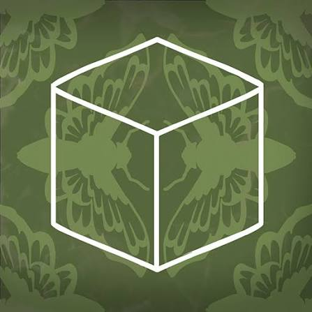

“A detective story with a surreal twist.”
Cube Escape: Paradox é um dos capítulos mais importantes da série Cube Escape e acompanha novamente o detetive Dale Vandermeer. O jogo combina investigação, enigmas e uma atmosfera surreal, colocando Dale em uma situação na qual suas próprias memórias parecem estar contra ele. O título foi desenvolvido junto com o curta-metragem Paradox: A Rusty Lake Film, criando uma experiência que conecta diretamente jogo e cinema. Assim como nos outros títulos da franquia, objetos aparentemente comuns escondem pistas importantes, e cada detalhe pode revelar uma nova parte do mistério.
O detetive Dale Vandermeer acorda em uma sala desconhecida sem saber como chegou ali. Enquanto tenta encontrar uma saída, ele percebe que os objetos ao seu redor estão ligados às suas próprias memórias e à investigação que vem realizando. Para escapar, Dale precisa explorar o ambiente, solucionar enigmas e reconstruir os acontecimentos que o levaram até aquele lugar. À medida que suas memórias começam a voltar, a realidade ao redor de Dale se torna cada vez mais estranha. As pistas revelam conexões com Laura Vanderboom, seu passado e os misteriosos acontecimentos de Rusty Lake. O que parecia ser apenas uma sala se transforma em um novo capítulo da investigação, no qual passado e presente se misturam e nada é exatamente o que parece.